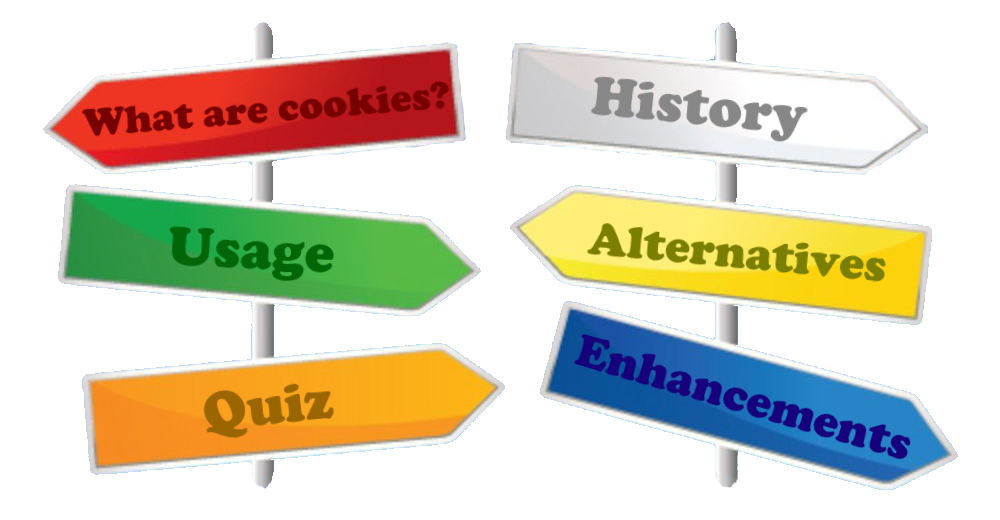

This website has been created for COS10026: Computing Technology Inquiry Project.
It was developed by Aidan Davies, Jesh Kumar, Dylan Lewis, Nimash Rathnayake and Kasun Jayawardhana.
This website provides a summary of cookies and sessions: what they are, how they work and why they're used. If you'd like a overview of the site's pages, then click here to watch a YouTube video tour, or simply watch the video below!
To navigate to other pages on this site, use the menu located at the top, or the signs below. Simply click on the relevant topic to be taken there!
